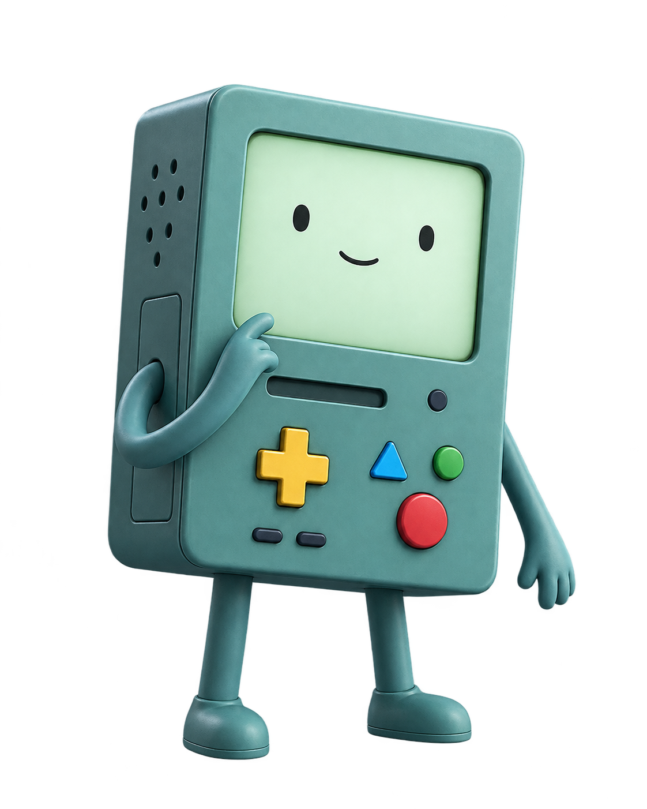
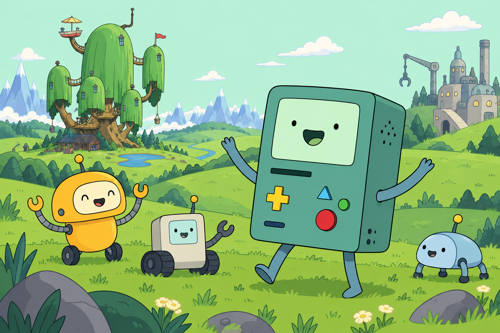

Crear para conectar.
NUESTRO PROPÓSITO / MISIÓNCrear robots MO con capacidades especializadas para realizar distintas tareas y desarrollar formas de interacción que vayan más allá de una función mecánica.
DESDE LA FÁBRICA MO, PARA EL MUNDO
Creamos más que robots. Damos vida a nuevas formas de ayudar, aprender y conectar.
Conoce nuestro mundo
01 / NUESTRA ESENCIA
Un legado que cuidamos. Un futuro que construimos juntos.
Crear robots MO con capacidades especializadas para realizar distintas tareas y desarrollar formas de interacción que vayan más allá de una función mecánica.
Preservar el legado tecnológico de Moe y asegurar la continuidad de los robots MO mediante la innovación, el mantenimiento de sus sistemas y el desarrollo de sus capacidades.

Los valores que guían cada decisión.
Bienestar y funcionamiento de los MO.
Atender las consecuencias tecnológicas.
Conservar conocimientos y recuerdos.
Garantizar la durabilidad de los MO.
Mejorar las capacidades tecnológicas.
02 / NUESTRO HORIZONTE
Reconocemos lo que nos hace fuertes, las posibilidades que se abren y los retos que debemos atender.
Nuestras fortalezas
Nuestras oportunidades
Nuestras debilidades
Nuestras amenazas
03 / COMPROMISOS DE FUTURO
Tres compromisos concretos para dar continuidad a los MO.
Plazos previstos desde el inicio de cada iniciativa.
Inspeccionar el 100% de las unidades MO durante tres meses, generar diagnósticos individuales y resolver al menos el 80% de las fallas reparables.
Implementar en cuatro meses un procedimiento de respaldo previo a reparaciones para el 100% de las unidades intervenidas, comprobando la recuperación de datos.
Documentar en cuatro meses cinco procedimientos esenciales y capacitar a tres unidades MO para que aprueben al menos el 90% de su evaluación práctica.
El futuro de los MO empieza
por cuidar lo que los hace únicos.